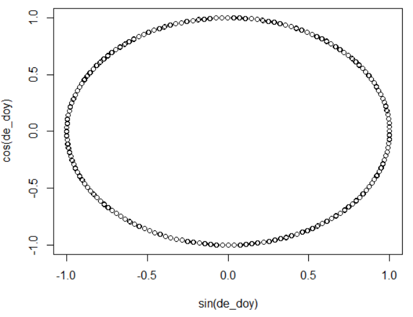

What is circular variables?
Circular variables are variables with cycle characteristic, for example, direction (from 0 deg to 360 deg), time (from 0 to 23 hr, or January to December). The begining and the end of the variables are close to each other. If you analyzed these kind of data just as normal linear variables (such as temperature, slope…), the results would be unexplainable.
For the scientists in the field of ecology, geology, or geography, it is really common to have circular variables. However, little was discussed when it comes to the solution.
Ways to handle circular variables
Classification
The most Intuitive way is to classify the circular variables, by which you can add classified variables into your linear models. Taking the direction data for example, it can be classified into 4 categories, 0 ~ 45 deg as class1, 45 ~ 90 as class2, and so on.
Trigonometric function
By projecting the circular variables on a unit circle, and convert them to two-dimension (x,y) variables, you can keep the cycle characteristic of the original circular variables.
Here taking day of the year from 1 to 365 as an example:
1 | doy_test<-c(1:365) |

The sin(de_doy), and cos(de_doy) are two new variables to represent doy_test.
Circular statistics
If further compute of circular variable mean and variance are needed, (Pewsey 2013) is worth reading. This book also cover many regression models to estimated circular variables.
References
Use of circular predictors in linear regression
Pewsey, A., Neuhäuser, M., & Ruxton, G. D. (2013). Circular statistics in R. Oxford University Press.